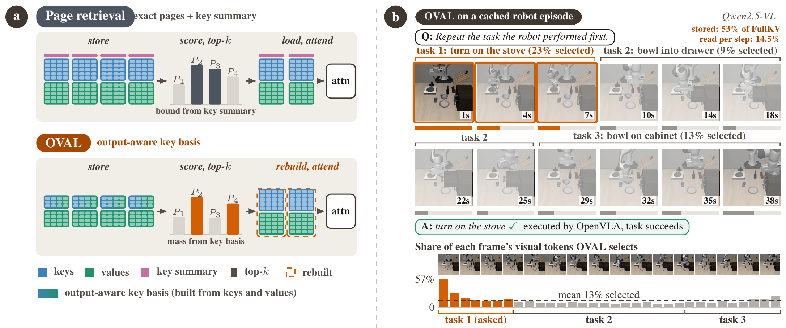
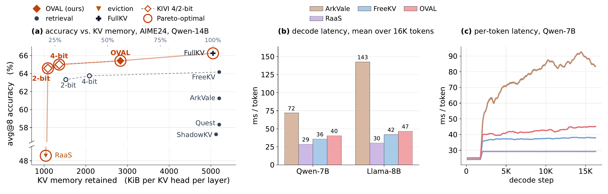
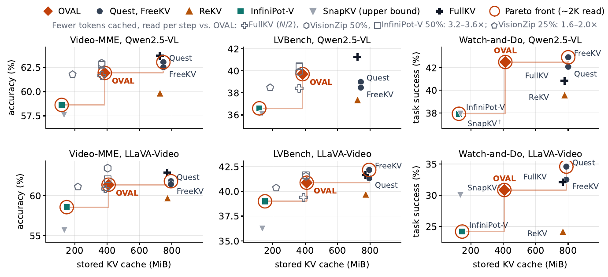

TL;DR
Page-retrieval sparse attention reads only a few KV pages per step, but still stores every page exactly, plus a digest. OVAL makes the digest be the page: each page is kept only as low-rank bases that both score it and rebuild it, so retrieval shrinks the cache instead of growing it.
- 53–66%of the full KV cache stored, versus 101–103% for page-retrieval baselines
- 8 / 9long-reasoning settings where OVAL is best or tied-best in avg@8 at the same attended budget
- 0.25points from FullKV on MATH500 with 4-bit bases, at 41% of its memory
- ≤0.32points from exact-page retrieval on Video-MME and LVBench, storing 53% instead of 103%
Abstract
Long-context decoding, whether over long reasoning traces, long videos, or robot episodes, is increasingly limited by the memory of the key-value (KV) cache. Page-retrieval sparse attention makes each decoding step cheaper by attending only to the top-scoring KV pages. However, it still stores every page exactly, and adds a small digest per page for scoring, so the cache ends up slightly larger than the full cache.
We propose OVAL, which stores each page as a pair of output-aware low-rank bases that act as both the retrieval index and the storage. A key basis scores the page and rebuilds its keys when the page is selected, and a PCA basis rebuilds its values. The exact pages can then be dropped, and nothing extra is added to the cache.
The key idea is that the key basis should be output-aware. A low-rank error in the keys perturbs the attention output at first order, but perturbs the page mass that retrieval ranks only at second order in expectation. OVAL therefore builds the key basis from a mix of key geometry (key PCA) and the attention-output error, with a per-head mixing weight set in closed form.
At the same attended budget, OVAL is best or tied-best in eight of nine long-reasoning settings. It matches FullKV on MATH500 with 66% of its memory, is 1.25 points above the best baseline on AIME24 with 56%, and is on par with FullKV on LongBench v2. On Video-MME and LVBench, it is within 0.32 points of exact-page retrieval at the same read, while storing 53% of the full cache instead of 103%. Its savings also stack with quantization and token pruning: with 4-bit bases, it is within 0.25 points of FullKV at 41% of its memory.
How it works
- Build the bases once per page. When a page of \(m\) tokens is complete, OVAL centers its keys \(X\) and values \(Y\), and keeps a rank-\(r\) key basis and a rank-\(r_v\) PCA value basis. The exact keys and values are dropped.
- Make the key basis output-aware. The key basis spans the top-\(r\) eigenvectors of a mix of key energy and attention-output error, where \(G_h\) is the head's output projection metric:
$$M_\eta=(1-\eta)\,\frac{X^\top X}{\operatorname{tr}(X^\top X)}+\eta\,\frac{X^\top Y G_h Y^\top X}{\operatorname{tr}(X^\top Y G_h Y^\top X)}.$$\(\eta=0\) is page-local key PCA; \(\eta=1\) keeps the directions that move the output most.
- Set \(\eta\) per head in closed form. Measure each head's output error at \(\eta=0\) and \(\eta=1\) on a few unlabeled calibration traces, and take the minimizer of the interpolated quadratic. No sweep and no labels; decode cost is unchanged.
- Score, select, rebuild. At each step, a page's score is the log attention mass of its reconstructed keys, at \(O(dr+mr)\) per page. Only the top \(n_p\) pages are rebuilt and attended, together with exact sink and recent tokens.
Results
Long reasoning
DeepSeek-R1-Distill models on MATH500, AIME24 and GPQA, in FreeKV's exact setting and harness (avg@8, %, mean of the three tasks). Baselines and FullKV are as reported by FreeKV.
| Model | FullKV | Razor | RaaS | Quest | ArkVale | ShadowKV | InfiniGen | FreeKV | OVAL |
|---|---|---|---|---|---|---|---|---|---|
| R1-Distill Llama-8B | 51.36 | 41.58 | 44.08 | 47.81 | 49.64 | 44.33 | 46.61 | 51.83 | 52.92 |
| R1-Distill Qwen-7B | 54.72 | 44.89 | 47.72 | 51.42 | 50.14 | 47.33 | 49.61 | 54.14 | 53.06 |
| R1-Distill Qwen-14B | 63.25 | 43.58 | 52.58 | 58.94 | 60.42 | 58.00 | 55.00 | 62.56 | 64.06 |
Bold: best among the compressed methods (FullKV not ranked). Per-task numbers, pass@8 and standard errors are in the paper.
Accuracy versus memory, and decode latency

Long context
| Model | FullKV | Quest | ShadowKV | FreeKV | OVAL |
|---|---|---|---|---|---|
| Llama-3.1-8B Instruct | 29.22 | 28.43 | 25.45 | 29.22 | 30.02 |
| Qwen2.5-7B Instruct | 27.44 | 27.63 | 25.84 | 26.84 | 29.82 |
| Qwen2.5-14B Instruct | 33.40 | 33.80 | 34.79 | 34.19 | 34.99 |
LongBench v2 overall accuracy (%, 64K context, single run). All seven baselines and LongGenBench results are in the paper.
Video and robot episodes
64-frame videos (about 13K visual tokens) are cached before the question. Quest, FreeKV and OVAL all read 2048 tokens per step, but OVAL attends rebuilt pages and stores about half as much.
| Method | Stored | Video-MME | LVBench | Watch-and-Do | |||
|---|---|---|---|---|---|---|---|
| Qwen2.5-VL | LLaVA-Video | Qwen2.5-VL | LLaVA-Video | Qwen2.5-VL | LLaVA-Video | ||
| FullKV | 100% | 63.70 | 62.89 | 41.25 | 41.64 | 40.83 | 32.08 |
| InfiniPot-V | 16–20% | 58.63 | 58.56 | 36.60 | 38.99 | 37.92 | 24.17 |
| ReKV | 100% | 59.85 | 59.70 | 37.38 | 39.70 | 39.58 | 24.17 |
| Quest | 103% | 63.04 | 61.81 | 38.99 | 41.32 | 42.08 | 34.58 |
| FreeKV | 103% | 62.52 | 61.44 | 38.48 | 42.16 | 42.92 | 32.50 |
| OVAL | 53% | 61.93 | 61.37 | 39.70 | 40.87 | 42.50 | 30.83 |
Accuracy (%) on Video-MME and LVBench and OpenVLA task success (%) on LIBERO Watch-and-Do. Stored: share of FullKV's KV cache. On average OVAL is within 0.32 and 0.18 points of Quest and FreeKV, and both paired intervals contain zero.

Composes with quantization
| MATH500, Qwen-7B | Memory (KiB) | avg@8 |
|---|---|---|
| FullKV | 1873 | 71.75 |
| FreeKV, FP16 | 1923 | 70.00 |
| FreeKV, 4-bit | 988 | 69.25 |
| OVAL, FP16 | 1237 | 71.75 |
| OVAL, 4-bit | 776 | 71.50 |
| OVAL, 2-bit | 691 | 70.75 |
| AIME24, Qwen-14B | Memory (KiB) | avg@8 |
|---|---|---|
| FullKV | 5050 | 66.25 |
| FreeKV, FP16 | 5200 | 64.17 |
| FreeKV, 4-bit | 2087 | 63.75 |
| OVAL, FP16 | 2830 | 65.42 |
| OVAL, 4-bit | 1361 | 65.00 |
| OVAL, 2-bit | 1090 | 64.58 |
Stored KiB per KV head and layer, with KIVI-style quantization of OVAL's bases and coefficients. Quantization lowers the bits per element and OVAL the elements per page, so the savings multiply.
BibTeX
@article{shahbazi2026oval,
title = {{OVAL}: Output-Aware Local Page Bases for {KV} Cache Compression},
author = {Shahbazi, Ashkan and Thrash, Chayne and Kolouri, Soheil},
journal = {arXiv preprint},
year = {2026}
}